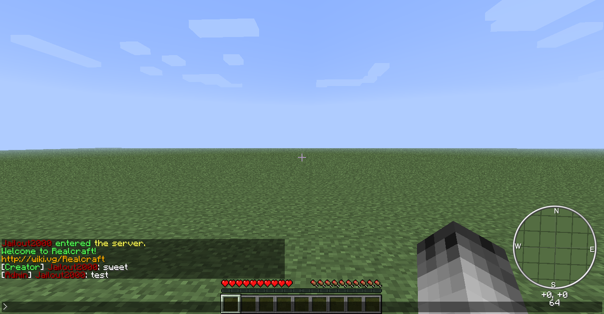

 This was on January 7th, 2012 while I was testing out user ranks, colors, and custom user labels. Realcraft is a custom (third-party) Minecraft server written in Realbasic by Jailout2000. It implements the Minecraft 1.3.2 server protocol. The server runs out of the console. It is also closed source, meaning anyone with a copy of it will not receive updates and the author will consider their copy a leaked build.
The author does not wish for anyone to obtain a copy of Realcraft. Anyone who wishes to play on Realcraft must connect to the author's server if and when it is online.
The server is being written on and tested with Microsoft Windows, but it must be compatible with Linux so it can be ran on the author's server machine. There are no plans to support Mac OS X at this time.
The author may be contacted through IRC (irc.freenode.net#realcraft) if you have any queries about the software itself or how all of this is setup.
Eventually Realcraft will become a duplicate of the Innectis community's server. This is a long-term goal and is expected to never be completed until years from now.
The author also wants to note that at anytime Realcraft may go on hiatus, meaning that development has been paused or stopped for a long time. If this happens and you still want to use Realcraft, contact the author through the IRC services above. A little demand always helps a sole freelance programmer.
| {kind=link}